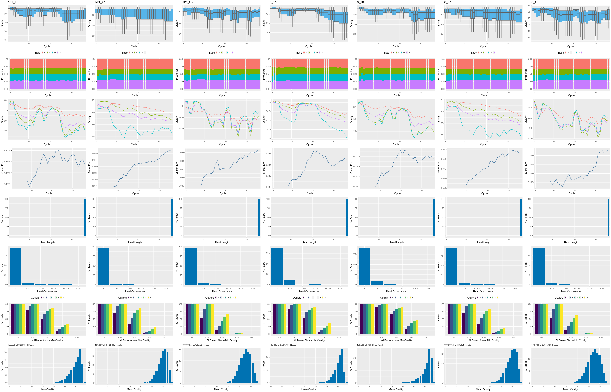
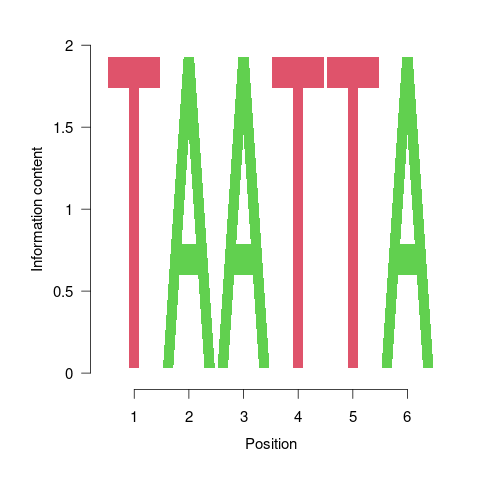

ChIP-Seq Workflow Template
25 minute read
Introduction
The following analyzes the ChIP-Seq data from Kaufman et al. (2010) using for peak calling MACS2 where the uninduced sample serves as input (reference). Prior to running this analysis the corresponding FASTQ files need to be downloaded following the instructions here.
For learning purposes one can use the much smaller toy data set and ChIP-Seq Rmd
workflow instance provided by the systemPipeRdata package. This toy workflow instance
can be conveniently obtained by running genWorkenvir(workflow='chipseq') (see
below). The FASTQ data used for this toy instance are the same as for the
RNA-Seq workflow.
For the analysis of the Kaufman et al. (2010) data set (see download here)
users want to use the Rmd instance linked from the top right corner of this page.
Additional detail about this is provided here.
Experimental design
Typically, users want to specify here all information relevant for the analysis of their NGS study. This includes detailed descriptions of FASTQ files, experimental design, reference genome, gene annotations, etc.
Workflow environment
NOTE: this section describes how to set up the proper
environment (directory structure) for running systemPipeR workflows. After
mastering this task the workflow run instructions can be deleted
since they are not expected to be included in a final HTML/PDF report of a workflow.
-
If a remote system or cluster is used, then users need to log in to the remote system first. The following applies to an HPC cluster (e.g. HPCC cluster).
A terminal application needs to be used to log in to a user’s cluster account. Next, one can open an interactive session on a computer node with
srun --x11. More details about argument settings forsrunare available in this HPCC manual or the HPCC section of this website here. Next, load the R version required for running the workflow withmodule load. Sometimes it may be necessary to first unload an active software version before loading another version, e.g.module unload R.
srun --x11 --partition=gen242 --mem=20gb --cpus-per-task 8 --ntasks 1 --time 20:00:00 --pty bash -l
module unload R; module load R/4.2.2
- Load a workflow template with the
genWorkenvirfunction. This can be done from the command-line or from within R. However, only one of the two options needs to be used.
From command-line
$ Rscript -e "systemPipeRdata::genWorkenvir(workflow='chipseq')"
$ cd chipseq
From R
library(systemPipeRdata)
genWorkenvir(workflow = "chipseq")
setwd("chipseq")
-
Optional: if the user wishes to use another
Rmdfile than the template instance provided by thegenWorkenvirfunction, then it can be copied or downloaded into the root directory of the workflow environment (e.g. withcporwget). -
Now one can open from the root directory of the workflow the corresponding R Markdown script (e.g. systemPipeChIPseq.Rmd) using an R IDE, such as nvim-r, ESS or RStudio. Subsequently, the workflow can be run as outlined below. For learning purposes it is recommended to run workflows for the first time interactively. Once all workflow steps are understood and possibly modified to custom needs, one can run the workflow from start to finish with a single command using
runWF().
Load packages
The systemPipeR package needs to be loaded to perform the analysis
steps shown in this report (H Backman and Girke 2016). The package allows users
to run the entire analysis workflow interactively or with a single command
while also generating the corresponding analysis report. For details
see systemPipeR's main vignette.
library(systemPipeR)
To apply workflows to custom data, the user needs to modify the targets file and if
necessary update the corresponding parameter (.cwl and .yml) files.
A collection of pre-generated .cwl and .yml files are provided in the param/cwl subdirectory
of each workflow template. They are also viewable in the GitHub repository of systemPipeRdata (see
here).
For more information of the structure of the targets file, please consult the documentation
here. More details about the new parameter files from systemPipeR can be found here.
Import custom functions
Custom functions for the challenge projects can be imported with the source command from a local R script (here challengeProject_Fct.R). Skip this step if such a script is not available. Alternatively, these functions can be loaded from a custom R package.
source("challengeProject_Fct.R")
Experiment definition provided by targets file
The targets file defines all FASTQ files and sample comparisons of the analysis workflow.
If needed the tab separated (TSV) version of this file can be downloaded from here
and the corresponding Google Sheet is here.
targetspath <- "targets_chipseq.txt"
targets <- read.delim(targetspath, comment.char = "#")
knitr::kable(targets)
| FileName | SampleName | Factor | SampleLong | Experiment | Date | SampleReference |
|---|---|---|---|---|---|---|
| ./data/SRR038845_1.fastq.gz | AP1_1 | AP1 | APETALA1 Induced | 1 | 23-Mar-12 | |
| ./data/SRR038846_1.fastq.gz | AP1_2A | AP1 | APETALA1 Induced | 1 | 23-Mar-12 | |
| ./data/SRR038847_1.fastq.gz | AP1_2B | AP1 | APETALA1 Induced | 1 | 23-Mar-12 | |
| ./data/SRR038848_1.fastq.gz | C_1A | C | Control Mock | 1 | 23-Mar-12 | AP1_1 |
| ./data/SRR038849_1.fastq.gz | C_1B | C | Control Mock | 1 | 23-Mar-12 | AP1_1 |
| ./data/SRR038850_1.fastq.gz | C_2A | C | Control Mock | 1 | 23-Mar-12 | AP1_2A |
| ./data/SRR038851_1.fastq.gz | C_2B | C | Control Mock | 1 | 23-Mar-12 | AP1_2B |
Workflow steps
This tutorial will demonstrate how to either build and run the workflow automatically,
or in an interactive mode by appending each step with the appendStep method. In both
cases the SYSargsList object will be populated with the instructions for running each
workflow step, while supporting both command-line steps as well as line-wise R commands
defined in the corresponding code chunks of this or any Rmd file that has been properly
formatted.
To create a workflow within systemPipeR, we can start by defining an empty
SYSargsList container. When restarting an existing workflow one
can set resume=TRUE under the SPRproject() function call.
library(systemPipeR)
sal <- SPRproject()
## Creating directory: /home/tgirke/tmp/GEN242/content/en/tutorials/spchipseq/data
## Creating directory '/home/tgirke/tmp/GEN242/content/en/tutorials/spchipseq/.SPRproject'
## Creating file '/home/tgirke/tmp/GEN242/content/en/tutorials/spchipseq/.SPRproject/SYSargsList.yml'
sal
## Instance of 'SYSargsList':
## No workflow steps added
Next, the importWF function will load the entire workflow into the SYSargsList object
(here sal). Subsequently, the runWF() function will run the workflow from start to finish.
If needed, specific workflow steps can be executed by assigning their corresponding
position numbers within the workflow to the steps argument (see ?runWF). After completion of the workflow
one can render a scientific analysis report in HTML format with the renderReport()
function that uses R Markdown internally.
sal <- importWF(sal, file_path = "systemPipeChIPseq.Rmd") ## Import all the Workflow steps
sal
sal <- runWF(sal) # Runs workflow
sal <- renderReport(sal) # Renders report
rmarkdown::render("systemPipeChIPseq.Rmd", clean = TRUE, output_format = "BiocStyle::html_document") # Alternative report rendering
Required packages and resources
The systemPipeR package needs to be loaded (H Backman and Girke 2016).
appendStep(sal) <- LineWise(code = {
library(systemPipeR)
}, step_name = "load_SPR")
Read preprocessing
Read quality filtering and trimming
The function preprocessReads allows to apply predefined or custom
read preprocessing functions to all FASTQ files referenced in a
SYSargsList container, such as quality filtering or adapter trimming
routines. The paths to the resulting output FASTQ files are stored in the
outfiles slot of the SYSargsList object. The following example performs adapter trimming with
the trimLRPatterns function from the Biostrings package.
After the trimming step a new targets file is generated (here
targets_trim.txt) containing the paths to the trimmed FASTQ files.
The new targets file can be used for the next workflow step with an updated
SYSargs2 instance, e.g. running the NGS alignments using the
trimmed FASTQ files.
Here, we are appending this step to the SYSargsList object created previously.
All the parameters are defined on the preprocessReads/preprocessReads-pe.yml and
preprocessReads/preprocessReads-pe.cwl files.
appendStep(sal) <- SYSargsList(step_name = "preprocessing", targets = "targets_chipseq.txt",
dir = TRUE, wf_file = "preprocessReads/preprocessReads-se.cwl",
input_file = "preprocessReads/preprocessReads-se.yml", dir_path = "param/cwl",
inputvars = c(FileName = "_FASTQ_PATH1_", SampleName = "_SampleName_"),
dependency = c("load_SPR"))
After, we can check the trimLRPatterns function in input parameter:
yamlinput(sal, "preprocessing")$Fct
## [1] "'trimLRPatterns(Rpattern=\"GCCCGGGTAA\", subject=fq)'"
After the preprocessing step, the outfiles files can be used to generate the new
targets files containing the paths to the trimmed FASTQ files. The new targets
information can be used for the next workflow step instance, e.g. running the
NGS alignments with the trimmed FASTQ files. The appendStep function is
automatically handling this connectivity between steps. Please check the Alignments
step for more details.
FASTQ quality report
The following seeFastq and seeFastqPlot functions generate and plot a series of useful
quality statistics for a set of FASTQ files including per cycle quality box
plots, base proportions, base-level quality trends, relative k-mer
diversity, length and occurrence distribution of reads, number of reads
above quality cutoffs and mean quality distribution. The results are
written to a PDF file named fastqReport.pdf.
appendStep(sal) <- LineWise(code = {
fastq <- getColumn(sal, step = "preprocessing", "targetsWF",
column = 1)
fqlist <- seeFastq(fastq = fastq, batchsize = 10000, klength = 8)
pdf("./results/fastqReport.pdf", height = 18, width = 4 *
length(fqlist))
seeFastqPlot(fqlist)
dev.off()
}, step_name = "fastq_report", dependency = "preprocessing")

Figure 1: FASTQ quality report for 7 samples.
Alignments
Read mapping with Bowtie2
The NGS reads of this project will be aligned with Bowtie2 against the
reference genome sequence (Langmead and Salzberg 2012). The parameter settings of the
Bowtie2 index are defined in the bowtie2-index.cwl and bowtie2-index.yml files.
Building the index:
appendStep(sal) <- SYSargsList(step_name = "bowtie2_index", dir = FALSE,
targets = NULL, wf_file = "bowtie2/bowtie2-index.cwl", input_file = "bowtie2/bowtie2-index.yml",
dir_path = "param/cwl", inputvars = NULL, dependency = c("preprocessing"))
The parameter settings of the aligner are defined in the workflow_bowtie2-se.cwl
and workflow_bowtie2-se.yml files. The following shows how to construct the
corresponding SYSargsList object.
In ChIP-Seq experiments it is usually more appropriate to eliminate reads mapping
to multiple locations. To achieve this, users want to remove the argument setting
-k 50 non-deterministic in the configuration files.
appendStep(sal) <- SYSargsList(step_name = "bowtie2_alignment",
dir = TRUE, targets = "targets_chipseq.txt", wf_file = "workflow-bowtie2/workflow_bowtie2-se.cwl",
input_file = "workflow-bowtie2/workflow_bowtie2-se.yml",
dir_path = "param/cwl", inputvars = c(FileName = "_FASTQ_PATH1_",
SampleName = "_SampleName_"), dependency = c("bowtie2_index"))
To double-check the command line for each sample, please use the following:
cmdlist(sal, step = "bowtie2_alignment", targets = 1)
## $bowtie2_alignment
## $bowtie2_alignment$AP1_1
## $bowtie2_alignment$AP1_1$bowtie2
## [1] "bowtie2 -S ./results/AP1_1.sam -x ./data/tair10.fasta -k 50 --non-deterministic -U ./data/SRR038845_1.fastq.gz -p 4"
##
## $bowtie2_alignment$AP1_1$`samtools-view`
## [1] "samtools view -bS -o ./results/AP1_1.bam ./results/AP1_1.sam "
##
## $bowtie2_alignment$AP1_1$`samtools-sort`
## [1] "samtools sort -o ./results/AP1_1.sorted.bam ./results/AP1_1.bam -@ 4"
##
## $bowtie2_alignment$AP1_1$`samtools-index`
## [1] "samtools index -b results/AP1_1.sorted.bam results/AP1_1.sorted.bam.bai ./results/AP1_1.sorted.bam "
Read and alignment stats
The following provides an overview of the number of reads in each sample and how many of them aligned to the reference.
appendStep(sal) <- LineWise(code = {
fqpaths <- getColumn(sal, step = "bowtie2_alignment", "targetsWF",
column = "FileName")
bampaths <- getColumn(sal, step = "bowtie2_alignment", "outfiles",
column = "samtools_sort_bam")
read_statsDF <- alignStats(args = bampaths, fqpaths = fqpaths,
pairEnd = TRUE)
write.table(read_statsDF, "results/alignStats.xls", row.names = FALSE,
quote = FALSE, sep = "\t")
}, step_name = "align_stats", dependency = "bowtie2_alignment")
Create symbolic links for viewing BAM files in IGV
The symLink2bam function creates symbolic links to view the BAM alignment
files in a genome browser such as IGV without moving these large files to a
local system. The corresponding URLs are written to a file with a path
specified under urlfile, here IGVurl.txt. Please replace the directory
and the user name. The following parameter settings will create a
subdirectory under ~/.html called somedir of the user account. The user
name under urlbase, here <username>, needs to be changed to the corresponding
user name of the person running this function.
appendStep(sal) <- LineWise(code = {
bampaths <- getColumn(sal, step = "bowtie2_alignment", "outfiles",
column = "samtools_sort_bam")
bampaths <- setNames(normalizePath(bampaths), names(bampaths))
symLink2bam(sysargs = bampaths, htmldir = c("~/.html/", "somedir/"),
urlbase = "http://cluster.hpcc.ucr.edu/~<username>/",
urlfile = "./results/IGVurl.txt")
}, step_name = "bam_IGV", dependency = "bowtie2_alignment", run_step = "optional")
Peak calling with MACS2
Merge BAM files of replicates prior to peak calling
Merging BAM files of technical and/or biological replicates can improve
the sensitivity of the peak calling by increasing the depth of read
coverage. The mergeBamByFactor function merges BAM files based on grouping information
specified by a factor, here the Factor column of the imported targets file.
It also returns an updated targets object containing the paths to the
merged BAM files as well as to any unmerged files without replicates.
The updated targets object can be used to update the SYSargsList object.
This step can be skipped if merging of BAM files is not desired.
appendStep(sal) <- LineWise(code = {
bampaths <- getColumn(sal, step = "bowtie2_alignment", "outfiles",
column = "samtools_sort_bam")
merge_bams <- mergeBamByFactor(args = bampaths, targetsDF = targetsWF(sal)[["bowtie2_alignment"]],
overwrite = TRUE)
updateColumn(sal, step = "merge_bams", position = "targetsWF") <- merge_bams
writeTargets(sal, step = "merge_bams", file = "targets_merge_bams.txt",
overwrite = TRUE)
}, step_name = "merge_bams", dependency = "bowtie2_alignment")
Peak calling with input/reference sample
MACS2 can perform peak calling on ChIP-Seq data with and without input samples (Zhang et al. 2008).
The following performs peak calling with input sample. The input sample
can be most conveniently specified in the SampleReference column of the
initial targets file. The writeTargetsRef function uses this
information to create a targets file intermediate for running MACS2
with the corresponding input sample(s).
appendStep(sal) <- LineWise(code = {
writeTargetsRef(infile = "targets_merge_bams.txt", outfile = "targets_bam_ref.txt",
silent = FALSE, overwrite = TRUE)
}, step_name = "writeTargetsRef", dependency = "merge_bams")
appendStep(sal) <- SYSargsList(step_name = "call_peaks_macs_withref",
targets = "targets_bam_ref.txt", wf_file = "MACS2/macs2-input.cwl",
input_file = "MACS2/macs2-input.yml", dir_path = "param/cwl",
inputvars = c(FileName1 = "_FASTQ_PATH1_", FileName2 = "_FASTQ_PATH2_",
SampleReference = "_SampleName_"), id = "SampleReference",
dependency = c("writeTargetsRef"))
The peak calling results from MACS2 are written for each sample to
separate files in the results/call_peaks_macs_withref directory. They are
named after the corresponding files with extensions used by MACS2.
Annotate peaks with genomic context
Annotation with ChIPseeker package
The following annotates the identified peaks with genomic context information
using the ChIPseeker package (Yu, Wang, and He 2015).
appendStep(sal) <- LineWise(code = {
library(ChIPseeker)
library(GenomicFeatures)
peaks_files <- getColumn(sal, step = "call_peaks_macs_withref",
"outfiles", column = "peaks_xls")
txdb <- suppressWarnings(makeTxDbFromGFF(file = "data/tair10.gff",
format = "gff", dataSource = "TAIR", organism = "Arabidopsis thaliana"))
for (i in seq(along = peaks_files)) {
peakAnno <- annotatePeak(peaks_files[i], TxDb = txdb,
verbose = FALSE)
df <- as.data.frame(peakAnno)
outpaths <- paste0("./results/", names(peaks_files),
"_ChIPseeker_annotated.xls")
names(outpaths) <- names(peaks_files)
write.table(df, outpaths[i], quote = FALSE, row.names = FALSE,
sep = "\t")
}
updateColumn(sal, step = "annotation_ChIPseeker", position = "outfiles") <- data.frame(outpaths)
}, step_name = "annotation_ChIPseeker", dependency = "call_peaks_macs_withref")
The peak annotation results are written to the results directory.
Summary plots provided by the ChIPseeker package. Here applied only to one sample
for demonstration purposes.
appendStep(sal) <- LineWise(code = {
peaks_files <- getColumn(sal, step = "call_peaks_macs_withref",
"outfiles", column = "peaks_xls")
peak <- readPeakFile(peaks_files[1])
pdf("results/peakscoverage.pdf")
covplot(peak, weightCol = "X.log10.pvalue.")
dev.off()
pdf("results/peaksHeatmap.pdf")
peakHeatmap(peaks_files[1], TxDb = txdb, upstream = 1000,
downstream = 1000, color = "red")
dev.off()
pdf("results/peaksProfile.pdf")
plotAvgProf2(peaks_files[1], TxDb = txdb, upstream = 1000,
downstream = 1000, xlab = "Genomic Region (5'->3')",
ylab = "Read Count Frequency", conf = 0.05)
dev.off()
}, step_name = "ChIPseeker_plots", dependency = "annotation_ChIPseeker")
Count reads overlapping peaks
The countRangeset function is a convenience wrapper to perform read counting
iteratively over serveral range sets, here peak range sets. Internally,
the read counting is performed with the summarizeOverlaps function from the
GenomicAlignments package. The resulting count tables are directly saved to
files, one for each peak set.
appendStep(sal) <- LineWise(code = {
library(GenomicRanges)
bam_files <- getColumn(sal, step = "bowtie2_alignment", "outfiles",
column = "samtools_sort_bam")
args <- getColumn(sal, step = "call_peaks_macs_withref",
"outfiles", column = "peaks_xls")
outfiles <- paste0("./results/", names(args), "_countDF.xls")
bfl <- BamFileList(bam_files, yieldSize = 50000, index = character())
countDFnames <- countRangeset(bfl, args, outfiles, mode = "Union",
ignore.strand = TRUE)
updateColumn(sal, step = "count_peak_ranges", position = "outfiles") <- data.frame(countDFnames)
}, step_name = "count_peak_ranges", dependency = "call_peaks_macs_withref",
)
Shows count table generated in previous step (results/AP1_1_countDF.xls).
To avoid slowdowns of the load time of this page, ony 200 rows of the source
table are imported into the below datatable view .
countDF <- read.delim("results/AP1_1_countDF.xls")[1:200, ]
colnames(countDF)[1] <- "PeakIDs"
library(DT)
datatable(countDF)
Differential binding analysis
The runDiff function performs differential binding analysis in batch mode for
several count tables using edgeR or DESeq2 (Robinson, McCarthy, and Smyth 2010; Love, Huber, and Anders 2014).
Internally, it calls the functions run_edgeR and run_DESeq2. It also returns
the filtering results and plots from the downstream filterDEGs function using
the fold change and FDR cutoffs provided under the dbrfilter argument.
appendStep(sal) <- LineWise(code = {
countDF_files <- getColumn(sal, step = "count_peak_ranges",
"outfiles")
outfiles <- paste0("./results/", names(countDF_files), "_peaks_edgeR.xls")
names(outfiles) <- names(countDF_files)
cmp <- readComp(file = stepsWF(sal)[["bowtie2_alignment"]],
format = "matrix")
dbrlist <- runDiff(args = countDF_files, outfiles = outfiles,
diffFct = run_edgeR, targets = targetsWF(sal)[["bowtie2_alignment"]],
cmp = cmp[[1]], independent = TRUE, dbrfilter = c(Fold = 2,
FDR = 1))
}, step_name = "diff_bind_analysis", dependency = "count_peak_ranges",
)
GO term enrichment analysis
Obtain gene-to-GO mappings
The following shows how to obtain gene-to-GO mappings from biomaRt (here for A.
thaliana) and how to organize them for the downstream GO term
enrichment analysis. Alternatively, the gene-to-GO mappings can be
obtained for many organisms from Bioconductor’s *.db genome annotation
packages or GO annotation files provided by various genome databases.
For each annotation this relatively slow preprocessing step needs to be
performed only once. Subsequently, the preprocessed data can be loaded
with the load function as shown in the next subsection.
GO term enrichment analysis
The following performs GO term enrichment analysis for each annotated peak
set. Note: the following assumes that the GO annotation data exists under
data/GO/catdb.RData.
appendStep(sal) <- LineWise(code = {
library("biomaRt")
# listMarts() # To choose BioMart database
# listMarts(host='plants.ensembl.org')
m <- useMart("plants_mart", host = "https://plants.ensembl.org")
m <- useMart("plants_mart", dataset = "athaliana_eg_gene",
host = "https://plants.ensembl.org")
go <- getBM(attributes = c("go_id", "tair_locus", "namespace_1003"),
mart = m)
go <- go[go[, 3] != "", ]
go[, 3] <- as.character(go[, 3])
go[go[, 3] == "molecular_function", 3] <- "F"
go[go[, 3] == "biological_process", 3] <- "P"
go[go[, 3] == "cellular_component", 3] <- "C"
go[1:4, ]
if (!dir.exists("./data/GO"))
dir.create("./data/GO")
write.table(go, "data/GO/GOannotationsBiomart_mod.txt", quote = FALSE,
row.names = FALSE, col.names = FALSE, sep = "\t")
catdb <- makeCATdb(myfile = "data/GO/GOannotationsBiomart_mod.txt",
lib = NULL, org = "", colno = c(1, 2, 3), idconv = NULL)
save(catdb, file = "data/GO/catdb.RData")
}, step_name = "get_go_annot", dependency = "annotation_ChIPseeker",
)
GO term enrichment analysis
The following performs GO term enrichment analysis for each annotated peak
set. Note: the following assumes that the GO annotation data exists under
data/GO/catdb.RData.
appendStep(sal) <- LineWise(code = {
annofiles <- getColumn(sal, step = "annotation_ChIPseeker",
"outfiles")
gene_ids <- sapply(annofiles, function(x) unique(as.character(read.delim(x)[,
"geneId"])), simplify = FALSE)
load("data/GO/catdb.RData")
BatchResult <- GOCluster_Report(catdb = catdb, setlist = gene_ids,
method = "all", id_type = "gene", CLSZ = 2, cutoff = 0.9,
gocats = c("MF", "BP", "CC"), recordSpecGO = NULL)
write.table(BatchResult, "results/GOBatchAll.xls", quote = FALSE,
row.names = FALSE, sep = "\t")
}, step_name = "go_enrich", dependency = "annotation_ChIPseeker",
)
Shows GO term enrichment results from previous step. The last gene identifier column (10)
of this table has been excluded in this viewing instance to minimize the complexity of the
result.
To avoid slowdowns of the load time of this page, only 50 rows of the source
table are imported into the below datatable view .
BatchResult <- read.delim("results/GOBatchAll.xls")[1:50, ]
library(DT)
datatable(BatchResult[, -10], options = list(scrollX = TRUE,
autoWidth = TRUE))
Motif analysis
Parse DNA sequences of peak regions from genome
Enrichment analysis of known DNA binding motifs or de novo discovery
of novel motifs requires the DNA sequences of the identified peak
regions. To parse the corresponding sequences from the reference genome,
the getSeq function from the Biostrings package can be used. The
following example parses the sequences for each peak set and saves the
results to separate FASTA files, one for each peak set. In addition, the
sequences in the FASTA files are ranked (sorted) by increasing p-values
as expected by some motif discovery tools, such as BCRANK.
appendStep(sal) <- LineWise(code = {
library(Biostrings)
library(seqLogo)
library(BCRANK)
rangefiles <- getColumn(sal, step = "call_peaks_macs_withref",
"outfiles")
for (i in seq(along = rangefiles)) {
df <- read.delim(rangefiles[i], comment = "#")
peaks <- as(df, "GRanges")
names(peaks) <- paste0(as.character(seqnames(peaks)),
"_", start(peaks), "-", end(peaks))
peaks <- peaks[order(values(peaks)$X.log10.pvalue., decreasing = TRUE)]
pseq <- getSeq(FaFile("./data/tair10.fasta"), peaks)
names(pseq) <- names(peaks)
writeXStringSet(pseq, paste0(rangefiles[i], ".fasta"))
}
}, step_name = "parse_peak_sequences", dependency = "call_peaks_macs_withref")
Motif discovery with BCRANK
The Bioconductor package BCRANK is one of the many tools available for
de novo discovery of DNA binding motifs in peak regions of ChIP-Seq
experiments. The given example applies this method on the first peak
sample set and plots the sequence logo of the highest ranking motif.
appendStep(sal) <- LineWise(code = {
library(Biostrings)
library(seqLogo)
library(BCRANK)
rangefiles <- getColumn(sal, step = "call_peaks_macs_withref",
"outfiles")
set.seed(0)
BCRANKout <- bcrank(paste0(rangefiles[1], ".fasta"), restarts = 25,
use.P1 = TRUE, use.P2 = TRUE)
toptable(BCRANKout)
topMotif <- toptable(BCRANKout, 1)
weightMatrix <- pwm(topMotif, normalize = FALSE)
weightMatrixNormalized <- pwm(topMotif, normalize = TRUE)
pdf("results/seqlogo.pdf")
seqLogo(weightMatrixNormalized)
dev.off()
}, step_name = "bcrank_enrich", dependency = "call_peaks_macs_withref")

Figure 2: One of the motifs identified by BCRANK
Version Information
appendStep(sal) <- LineWise(code = {
sessionInfo()
}, step_name = "sessionInfo", dependency = "bcrank_enrich")
Running workflow
Interactive job submissions in a single machine
For running the workflow, runWF function will execute all the steps store in
the workflow container. The execution will be on a single machine without
submitting to a queuing system of a computer cluster.
sal <- runWF(sal)
Parallelization on clusters
Alternatively, the computation can be greatly accelerated by processing many files in parallel using several compute nodes of a cluster, where a scheduling/queuing system is used for load balancing.
The resources list object provides the number of independent parallel cluster
processes defined under the Njobs element in the list. The following example
will run 18 processes in parallel using each 4 CPU cores.
If the resources available on a cluster allow running all 18 processes at the
same time, then the shown sample submission will utilize in a total of 72 CPU cores.
Note, runWF can be used with most queueing systems as it is based on utilities
from the batchtools package, which supports the use of template files (*.tmpl)
for defining the run parameters of different schedulers. To run the following
code, one needs to have both a conffile (see .batchtools.conf.R samples here)
and a template file (see *.tmpl samples here)
for the queueing available on a system. The following example uses the sample
conffile and template files for the Slurm scheduler provided by this package.
The resources can be appended when the step is generated, or it is possible to
add these resources later, as the following example using the addResources
function:
resources <- list(conffile=".batchtools.conf.R",
template="batchtools.slurm.tmpl",
Njobs=8,
walltime=120, ## minutes
ntasks=1,
ncpus=4,
memory=1024, ## Mb
partition = "short"
)
sal <- addResources(sal, c("bowtie2_alignment"), resources = resources)
sal <- runWF(sal)
Visualize workflow
systemPipeR workflows instances can be visualized with the plotWF function.
plotWF(sal)
Checking workflow status
To check the summary of the workflow, we can use:
sal
statusWF(sal)
Technical report
systemPipeR compiles all the workflow execution logs in one central location,
making it easier to check any standard output (stdout) or standard error
(stderr) for any command-line tools used on the workflow or the R code stdout.
sal <- renderLogs(sal)
Scientific report
systemPipeR auto-generates scientific analysis reports in HTML format.
sal <- renderReport(sal)
Alternatively, scientific reports can be rendered with the render function from rmarkdown.
rmarkdown::render("systemPipeChIPseq.Rmd", clean = TRUE, output_format = "BiocStyle::html_document")
Funding
This project was supported by funds from the National Institutes of Health (NIH) and the National Science Foundation (NSF).
Session Info
sessionInfo()
## R version 4.3.0 (2023-04-21)
## Platform: x86_64-pc-linux-gnu (64-bit)
## Running under: Debian GNU/Linux 11 (bullseye)
##
## Matrix products: default
## BLAS: /usr/lib/x86_64-linux-gnu/blas/libblas.so.3.9.0
## LAPACK: /usr/lib/x86_64-linux-gnu/lapack/liblapack.so.3.9.0
##
## locale:
## [1] LC_CTYPE=en_US.UTF-8 LC_NUMERIC=C
## [3] LC_TIME=en_US.UTF-8 LC_COLLATE=en_US.UTF-8
## [5] LC_MONETARY=en_US.UTF-8 LC_MESSAGES=en_US.UTF-8
## [7] LC_PAPER=en_US.UTF-8 LC_NAME=C
## [9] LC_ADDRESS=C LC_TELEPHONE=C
## [11] LC_MEASUREMENT=en_US.UTF-8 LC_IDENTIFICATION=C
##
## time zone: America/Los_Angeles
## tzcode source: system (glibc)
##
## attached base packages:
## [1] stats4 stats graphics grDevices utils
## [6] datasets methods base
##
## other attached packages:
## [1] DT_0.27 systemPipeRdata_2.4.0
## [3] systemPipeR_2.6.0 ShortRead_1.58.0
## [5] GenomicAlignments_1.36.0 SummarizedExperiment_1.30.1
## [7] Biobase_2.60.0 MatrixGenerics_1.12.0
## [9] matrixStats_0.63.0 BiocParallel_1.34.1
## [11] Rsamtools_2.16.0 Biostrings_2.68.0
## [13] XVector_0.40.0 GenomicRanges_1.52.0
## [15] GenomeInfoDb_1.36.0 IRanges_2.34.0
## [17] S4Vectors_0.38.1 BiocGenerics_0.46.0
## [19] BiocStyle_2.28.0
##
## loaded via a namespace (and not attached):
## [1] gtable_0.3.3 xfun_0.39
## [3] bslib_0.4.2 hwriter_1.3.2.1
## [5] ggplot2_3.4.2 remotes_2.4.2
## [7] htmlwidgets_1.6.2 latticeExtra_0.6-30
## [9] lattice_0.21-8 generics_0.1.3
## [11] vctrs_0.6.2 tools_4.3.0
## [13] bitops_1.0-7 parallel_4.3.0
## [15] tibble_3.2.1 fansi_1.0.4
## [17] pkgconfig_2.0.3 Matrix_1.5-4
## [19] RColorBrewer_1.1-3 lifecycle_1.0.3
## [21] GenomeInfoDbData_1.2.10 stringr_1.5.0
## [23] compiler_4.3.0 deldir_1.0-6
## [25] munsell_0.5.0 codetools_0.2-19
## [27] htmltools_0.5.5 sass_0.4.6
## [29] RCurl_1.98-1.12 yaml_2.3.7
## [31] pillar_1.9.0 crayon_1.5.2
## [33] jquerylib_0.1.4 DelayedArray_0.26.2
## [35] cachem_1.0.8 tidyselect_1.2.0
## [37] digest_0.6.31 stringi_1.7.12
## [39] dplyr_1.1.2 bookdown_0.33
## [41] fastmap_1.1.1 grid_4.3.0
## [43] colorspace_2.1-0 cli_3.6.1
## [45] magrittr_2.0.3 S4Arrays_1.0.1
## [47] utf8_1.2.3 scales_1.2.1
## [49] rmarkdown_2.21 jpeg_0.1-10
## [51] interp_1.1-4 blogdown_1.16
## [53] png_0.1-8 evaluate_0.21
## [55] knitr_1.42 rlang_1.1.1
## [57] Rcpp_1.0.10 glue_1.6.2
## [59] formatR_1.14 BiocManager_1.30.20
## [61] jsonlite_1.8.4 R6_2.5.1
## [63] zlibbioc_1.46.0
References
H Backman, Tyler W, and Thomas Girke. 2016. “systemPipeR: NGS workflow and report generation environment.” BMC Bioinformatics 17 (1): 388. https://doi.org/10.1186/s12859-016-1241-0.
Kaufmann, Kerstin, Frank Wellmer, Jose M Muiño, Thilia Ferrier, Samuel E Wuest, Vijaya Kumar, Antonio Serrano-Mislata, et al. 2010. “Orchestration of floral initiation by APETALA1.” Science 328 (5974): 85–89. https://doi.org/10.1126/science.1185244.
Langmead, Ben, and Steven L Salzberg. 2012. “Fast Gapped-Read Alignment with Bowtie 2.” Nat. Methods 9 (4): 357–59. https://doi.org/10.1038/nmeth.1923.
Love, Michael, Wolfgang Huber, and Simon Anders. 2014. “Moderated Estimation of Fold Change and Dispersion for RNA-seq Data with DESeq2.” Genome Biol. 15 (12): 550. https://doi.org/10.1186/s13059-014-0550-8.
Robinson, M D, D J McCarthy, and G K Smyth. 2010. “EdgeR: A Bioconductor Package for Differential Expression Analysis of Digital Gene Expression Data.” Bioinformatics 26 (1): 139–40. https://doi.org/10.1093/bioinformatics/btp616.
Yu, Guangchuang, Li-Gen Wang, and Qing-Yu He. 2015. “ChIPseeker: An R/Bioconductor Package for ChIP Peak Annotation, Comparison and Visualization.” Bioinformatics 31 (14): 2382–3. https://doi.org/10.1093/bioinformatics/btv145.
Zhang, Y, T Liu, C A Meyer, J Eeckhoute, D S Johnson, B E Bernstein, C Nussbaum, et al. 2008. “Model-Based Analysis of ChIP-Seq (MACS).” Genome Biol. 9 (9). https://doi.org/10.1186/gb-2008-9-9-r137.